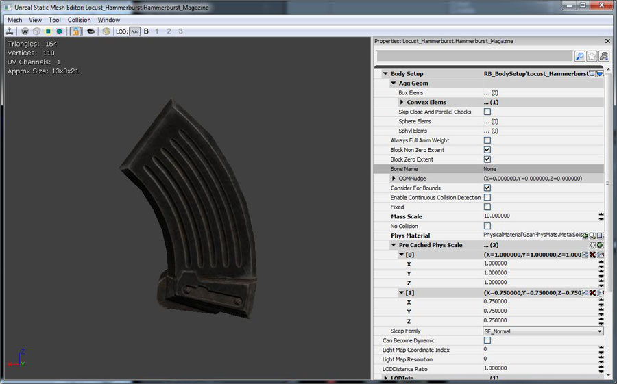

UDN
Search public documentation:
GameThreadProfilingHomeJP
English Translation
中国翻译
한국어
Interested in the Unreal Engine?
Visit the Unreal Technology site.
Looking for jobs and company info?
Check out the Epic games site.
Questions about support via UDN?
Contact the UDN Staff
中国翻译
한국어
Interested in the Unreal Engine?
Visit the Unreal Technology site.
Looking for jobs and company info?
Check out the Epic games site.
Questions about support via UDN?
Contact the UDN Staff
UE3 ホーム > パフォーマンス、プロファイリング、最適化 > ゲーム スレッドのプロファイリングと最適化
ゲーム スレッド のプロファイリングと最適化
概要
ゲームプレイ プロファイラー
- コンソールに
PROFILEGAME STARTとタイプすることによって、データのキャプチャを開始します。 - それが完了したら、
PROFILEGAME STOPとタイプすることによって、キャプチャを止めてデータをディスクに保存します。 - プロファイリングデータは、
\[UnrealInstallation]\[GameName]\Profiling\フォルダに吐き出されます。- コンソール上では、統計データが UnrealConsole を通じて自動的に PC に転送されます。
- GameplayProfiler を実行し、ファイルをロードします。(例 :
[GameName]-07.15-18.58.uprof)
Stats Viewer (統計ビューア)
- 使用しているビルドで STATS を 1 に設定します。 (UnBuild?.h)。
- これは、デバッグおよびリリースビルドにおいてデフォルトで有効化されます。
- スクリプトコードをプロファイルするために、
STATS_SLOWを 1 に設定します。(UnStats?.h)。- これによってプロファイリングが遅くなりますが、あらゆる UnrealScript? のコールに関する詳細なコールグラフデータが得られます。
- コンソールで
STAT StartFile?とタイプすることによって、統計情報をディスクにキャプチャし始めます。 - それが完了したら、
STAT StopFile?とタイプすることによって、ロギングを終えて統計情報ファイルをファイナライズします。 - アプリケーションの起動時に直ちに統計情報のキャプチャを開始するには、
-StartStatsFileの引数をコマンドラインに渡します。 - コンソール上では、必ず
-DisableHDDCacheコマンドライン オプションを渡します!- これによって、(統計ファイルの書き出しと競合する) HDDへのテクスチャ ミップマップのキャッシングが無効になります。
- 統計ファイルは、
[UnrealInstallation]\[GameName]\Profiling\フォルダに吐き出されます。- コンソール上では、統計データが UnrealConsole を通じて自動的に PC に転送されます。
- StatsViewer (統計ビューア) を起動し、ファイルをロードします。(例 :
[GameName]-07.15-18.58.ustats)
- ゲームをロードします。
- Connect to IP (IP への接続) を使用して、StatsViewer を Xenon セッションに接続します。
- Xenon 上で、Xenon の Title IP Address (タイトル IP アドレス) を使用します。Debug Channel IP Address (デバッグ チャンネル IP アドレス) は使用しません。
- UFE でこれを見つけるには、[Show All Target Information] (すべてのターゲット情報を表示する) をクリックします。
- ポート番号を必ず 13002 に設定します。
- Xenon 上で、Xenon の Title IP Address (タイトル IP アドレス) を使用します。Debug Channel IP Address (デバッグ チャンネル IP アドレス) は使用しません。
- リアルタイムの統計情報が UDP 接続を通じてストリームを開始します!
-
File > Saveによって、キャプチャしたデータをディスクに保存することができます。
- StatsViewer ツールに .ustats ファイルをロードします。あるいは、ライブのゲームセッションに 接続 します。
- インタラクティブなグラフによってフレームタイムがまず表示されるため、ヒッチとトレンドを確認することができます。
- 左側のコラムから統計情報をグラフに ドラッグ アンド ドロップ することによって、その統計情報を表示します。
- グラフ内で クリック することによって、フレームを選択し、そのフレームのための統計情報を表示します。
- グラフ内で ダブルクリック することによって、そのフレームのための コールグラフ を開きます!
- 左のコラムにある統計情報を右クリックすることによって、基準に基づいてフレームを表示します (View Frames by Criteria)。(例 : FPS < 20 のフレームだけを表示するなど)。
- メニューオプションを使用して、表示モードを切り替えます。(フレーム #s 対 時間、限定範囲 / 全体データ)。
- LTCG モードでは機能しません。(
#define STATSをローカルで設定しない限り)。リリースを使用します。 - リアルタイムの統計キャプチャにはまだいくぶんバグがあります。(フレーム落ち、スクロールがややぎこちない)。
レベルのプロファイリングと最適化
動的ライト環境の更新
レベルをプロファイリングすると、動的ライト環境の更新の負荷が大きいことが分かる場合がかなりあります。このような状況に直面した場合は、レベル内のどのアクタが DLE (動的ライト環境) を使用しているのかということと、それらの設定はどのようになっているのかということを調べる必要があります。 すべての InterpActors (別名 Movers) と KActors はデフォルトで動的ライト環境をもつようになっています。DLE は、更新の際に、光源へのラインチェックを行います。これにより多量の CPU コストが加算されます。ただし、動的オブジェクトにおける光源処理のコストを削減するために、さまざまなオプションを設定することができます。 以下では、コストの最も高いものから最も低いものまで、ライト環境の設定を列挙しています (ゲームスレッドにおいて)。あわせて、それら設定をいつ使用するべきかということについても説明しています。 1) bEnabled=True 、 bDynamic=True (デフォルト) 必要な場合に限って使用するべきです。 InvisibleUpdateTime (不可視更新時間) および MinTimeBetweenFullUpdates (フル更新間最小時間) に基づいて更新します。いかなる時においても、アクティブな数が 50 を超えることがないようにすべきです。視覚化されている場合や、プレイヤーに接近している場合、動いている場合に、余分なビジビリティのチェックを実行します。 2) bEnabled=True 、 bDynamic=False 、 bForceNonCompositeDynamicLights=True この設定は、負荷が非常に小さいです。最初のティック時に環境が更新され、その後再び更新されることはありません。動的ライトが影響を及ぼすことができるようになるためには、 bForceNonCompositeDynamicLights (ブール型強制非合成動的ライト) が必要となります。これは、ゲームスレッドにおいて過大なオーバーヘッドを生じさせることがありません。これは何百も置くことができます。最初のティック後に必要となるコストは、動的ライトへのラインチェックのみです。(しかも、オーナーが可視的な場合にのみ)。事前計算シャドウを使用するよりも見栄えがよくなります。回転しても光源処理が依然として適切であるためです。これらは、フラクチャ (破砕) メッシュや GDO、その他によって使用されます。これらに関して著しい負荷が見つかった場合は、コードの側でかなりの最適化が可能なはずです。 3) bEnabled=False 、 bUsePrecomputedShadows=True (プリミティブ コンポーネントにおいて)。また、これを動的チャンネルから取り出し、静的な光源チャンネルに入れる必要があります。 これらはライトマップ化され、少ないコストでレンダリングすることができ、ゲームスレッドのオーバーヘッドはありません。(ただし、 UDynamicLightEnvironmentComponent::Tick 関数は依然として呼び出されます)。動かされると見栄えが悪くなります。 アクティブなライト環境の数を調べることができるコンソールコマンドがあります。コンソールで SHOWLIGHTENVS をタイプすることによって、そのフレームでティックされたすべての環境のリストを得ることができます。出力は次のようになります。Log: LE: SP_MyMap_01_S.TheWorld:PersistentLevel.InterpActor_12.DynamicLightEnvironmentComponent_231 1 Log: LE: SP_MyMap_01_S.TheWorld:PersistentLevel.InterpActor_55.DynamicLightEnvironmentComponent_232 0 Log: LE: SP_MyMap_01_S.TheWorld:PersistentLevel.InterpActor_14.DynamicLightEnvironmentComponent_432 1 ...行の最後にある 1 は、 bDynamic が TRUE に設定されていることを意味します。これによって、レベルデザイナーがマップを変更して更新のオーバーヘッドを削減できるようになります。
パフォーマンスのロード
ストリーム インに長時間かかるレベルには、問題が存在することがあります。通常は、何か特定のオブジェクトがストリーム インに長い時間がかかることの原因となっています。ですから、そのオブジェクトを見つけて、理由を理解すればいいのです！ ロードとストリームを処理するエンジン内には多数の定義が存在します。- TRACK_SERIALIZATION_PERFORMANCE
- TRACK_DETAILED_ASYNC_STATS
- TRACK_FILEIO_STATS
パーティクル
通常、１つのシーンには多数のパーティクルがありますが、どれも同じ負荷というわけではありません。他のパーティクルに比べて特に負荷の大きいものがないか調べる必要があります。また、必要のない作業を行っているパーティクルがないかということも調べるべきでしょう。 #define TRACK_DETAILED_PARTICLE_TICK_STATS 1 を設定すると、ログに多数のパーティクル ティック統計情報が出力されます。 さらに、フレームごとにバウンドを更新するパーティクルを探す必要もあります。ContentAudit がこれらの ParticleSystems? にタグを付加しますが、フルームごとにバウンドが動的に更新されるパーティクルがある場合、これらは常に FixedRelativeBoundingBox? を必要としていると考えられます。 レベルの視界をさえぎるスモーク / スプラッシュエフェクトは、通常、低速のパーティクルシステムの大部分を占めます。これらのコストは、スクリーン上に大きく広がっているため、ヒットエフェクトおよびスパークよりも高くなります。これらを最適化するには、より不透明なパーティクルの使用を少なくするのが最も効果的です。マテリアルを単純化することも多少は有効ですが、レイヤーの数を減らすことに勝る方法はありません。 歪み (distortion) は、それが使用される DPG (深度優先グループ) それぞれにおいて、かなりのオーバーヘッドをコンスタントに要します。 (ユーザーまたはゲームプレイコードによって) フォアグランドの DPG に置かれるエフェクト (例 : スクリーンダメージやブラッド (血) エフェクト) を作成する場合は、フォアグランドの DPG およびワールドの DPG の両方に対してコンスタントなオーバーヘッドを付加することになります。これを回避するには、マテリアル内でシーンテクスチャ ルックアップを使用する屈折エフェクトを実行します。シーンテクスチャを使用することによってソート順序が変更になりますが、フォアグランドの DPG 内にあるエフェクトには重大なものとはなりません。また、オーバーラップするエフェクトが扱われませんが、スクリーンエフェクトにとって重要となることはめったにありません。物理
プレイ中に PhysX 物理エンジンによるオブジェクトの物理シミュレーションを使用すると、ゲームが非常にリアルになり、視覚的な効果も高まります。ただし、パフォーマンスに影響を及ぼす可能性もあります。物理シミュレーションをモニターして分析するために、データを視覚化し出力するための機能が「Unreal Engine 3」にはいくつかビルトインされています。また、サードパーティ製のツールが nVidia によって提供されており、非常に詳細なプロファイリングが可能です。 PhysX プロファイリング ツールの使用方法については、 PhysX 物理シミュレーションのプロファイリング のページを参照してください。 物理が何を行っているかを知るためのその他の コンソールコマンド には次のようなものがあります。- LISTAWAKEBODIES: じっと立っていて何も動かないのに物理タイムが非常に高い場合は、スリープになっていないボディがあるかもしれません。
- PHYSASSETBOUNDS: シーンの物理アセットのためのバウンドの位置
- nxvis コリジョン: 物理コリジョンのシーンがどのようなものであるのか知るのに便利な一般コマンド
スクリプト プロファイリング
ログ メッセージ
大量の情報がログに送られます。やがてデバッグロギングがものすごい量になる場合があります。そのようなことが起きると、本当に深刻な問題がスパムの中に埋もれてしまうことがあります。これに対処するには、ログは基本的にいつも空の状態にしておき、問題が起きた場合はただちに修正するようにすべきです。 ログ警告 / メッセージが表示された場合は、その原因を探り、そこに潜む問題を修正してください。問題を放置して、山積み状態にしてはいけません。 注意 : ログ 警告 / デバッグ メッセージを追加する場合は、必ず (どうか必ず!) 次のことを追加してください。- 問題を解決するにはどうすべきか、または、解決するにはどこを調べればよいか。
- どのオブジェクトがログを吐いているのか。

ガーベジコレクション
「Unreal Engine 3」では、GarbageCollection をメモリ管理戦略の一環として使用しています。実際に GC (ガベージコレクション) を行うことによる負荷を最小限に抑える必要があります。これは、反復するオブジェクトの量と、絶えず発生させては GC しているオブジェクトの量とを、最小限に抑えることで可能になります。 詳細については、 GC パフォーマンスの最適化 を参照してください。 また、コード内のDETAILED_PER_CLASS_GC_STATS を確認します。これをオンにすると、GarbageCollector が調べなければならないオブジェクトのクラスと GC が表示されます。特定のタイプのオブジェクトを見つけたら、そのオブジェクトをキャッシュできるかどうか考えてみてください。プール内にキャッシュするか、それをスポーンしているアクタにキャッシュする方が、絶えずスポーンさせては GC するよりも適切な場合があります。
フレームごとの負荷の大きい更新
どのフレームにおいてもオブジェクトは更新され、計算されています。これらのオブジェクトの中には、他に比べて膨大な時間のかかるものがあります。その原因には、多数のアタッチメント、まちがったコリジョン設定、効率の悪い Tick() コードなどが考えられます。 UnActorComponent?.cpp には、収集したものを判断する多数の定義があります。 その中から、次を有効にする必要があります。- LOG_DETAILED_COMPONENT_UPDATE_STATS
- LOG_DETAILED_ACTOR_UPDATE_STATS
遅い UnrealScript? 関数の呼出し
ゲームは UnrealScript? を使って、機能性をすばやくプロトタイプ化すべきです。そして、プロファイリングを実行するようになったら、どの機能が遅いのかを確かめます。これらの機能については、unrealscript を最適化するか、C++ に変換します。これにより、そのレベルをプレーして、時間のかかるものをファイルにログすることが、すばやく実行できます。 また、ひどく遅い関数のうち、ヒッチフレームの発生を助ける関数を、簡単に見つけ出すことが可能です。 次の定義を有効にします。SHOW_SLOW_UNREALSCRIPT_FUNCTION_CALLS
さらに、ログが取られるまでに必要となる関数呼出しの「遅さ」を決定するものとして、以下があります。 SHOW_SLOW_UNREALSCRIPT_FUNCTION_CALLS_TAKING_LONG_TIME_AMOUNT
スポーンは遅い
オブジェクトがワールドにスポーンされたり、ConstructObject (オブジェクト構成) されると、多数のものが発生します。AI がワールドへ大量にスポーンされると、大規模なヒッチが起こることがあります。ですから、この量を減らす必要があります。 (コンソール上) のエンジンは、複数の Pawn (ポーン) をフレームにスポーンしていることについて警告を発してくれます。 けれども、一度に大量のものをスポーンしないことを、心に留めておくべきです。 このよい例は、デス (機能停止) が発生した場合です。ポーンがデスするとと、通常は以下が関わってきます：- 流血メッシュ
- Gibs
- プレイサウンド
- 血のパーティクル
- カメラのパーティクル
- デカール
- デス パーティクル
- 弾丸のインパクト（デスをもたらした弾丸による）
- 弾丸インパクトのサウンド
UnrealScript? プリプロセッサのコード除外
UnrealScript? では、`if(`notdefined(FINAL_RELEASE)) プリプロセッサ コマンドを使用することによって、コードを出荷ビルドから除外することができます。これによって、外部コードがインクルードされたり実行されたりすることを防ぐことができます。
TickableActors? リストを使用する
広大なレベルには、Tick() で実行される何らかのロジックをともなったアクタが多数存在するケースが頻繁に起こります。しかし、プレーヤーがアクタのそばにいない場合、そのロジックの実行は重要ではありません。そこで、このようなアクタをティックさせないような方法をとることによって、CPU サイクルの浪費を防ぐ必要があります。 基本的には、TickableActors を利用するには、イベントを得て、オブジェクトを「on の状態に戻す」必要があります。木の葉がよい例です。プレーヤーが木の葉に触れないなら、ティックはしません。 アクタを TickableActors? リストに出し入れするには、次を利用します。 =SetTickIsDisabled(TRUE/FALSE); = 注記 : 物事を行うために適切な「イベント」の方法を持たないものについては、マネージャー、もしくは他のメカニズムを作成して、「スリープしている」オブジェクトをいつ「起こす」べきかを判断します。- AInteractiveFoliageActor? は、このシステムを使うアクタの好例です。
便利な実行コマンド
エンジン内には便利な実行コマンドがたくさんあり、パフォーマンスやメモリのために有益なことを行います。問題は、大抵の場合サブシステムを扱う特定のコード内に、これらのコマンドが隠れていることです。また、サブシステムを扱うページにリストされている場合もあります。そのため、全部を見つけるのはかなり難しいものです。 その上、これらのコマンドの中には通常の命名規則を持たないものもあります。 ここでは、中でも便利なものをいくつかあげます。 基本的には、ほとんどの実行コマンドは #define をどこかで有効にする必要があります。ですから、実行コマンドを選んで FindInFiles? を行い、そのコマンドを作動するには何をアクティブにする必要があるのかを調べます。 また、すべてのコマンドがログに出力するわけではありません。ファイルを作成するものもあれば、メモリにデータを作成するものもあり、ログされる前に「ダンプ」コマンドが必要です。 FindInFiles? を有効に活用しましょう！ UnPlayer?.cpp Exec() 関数には多数の実行コマンドがあります。 UnLevTic?.cpp には多数の G______ vars があり、これをオン/オフして特定のロギンングを許可します。- SHOWSKELCOMPTICKTIME
- SHOWLIGHTENVS
- SHOWISOVERLAPPING
- LISTAWAKEBODIES
- TOGGLECROWDS
- MOVEACTORTIMES
- PHYSASSETBOUNDS
- FRAMECOMPUPDATES
- FRAMEOFPAIN
- SHOWSKELCOMPLODS
- SHOWSKELMESHLODS
- SHOWFACEFXBONES
- SHOWFACEFXDEBUG
- LISTSKELMESHES
- LISTPAWNCOMPONENTS
- TOGGLELINECHECKS / DUMPLINECHECKS / RESETLINECHECKS
プレイヤー / AI プロファイリング
AI ロギング
AI は、面白いことがいろいろできますが、計算的観点からは負荷が大きくなる場合があります。AI ロギングを使用すると、AI が何を行っていたのか、なぜうまく動作しなかったのかということが分かります。さもなければ、ループで負荷が大きい動作を行うことになります。 AILogging が必要な場合は、それぞれの AIController クラスの下にある DefaultAI?.ini において、bAILogging=TRUE に設定してください。 これによって、ログディレクトリにログファイルが出力されます。そこには、コードの中で使用された AILog() すべてが入っています。Move Actor (ムーブアクタ)
MoveActor の呼び出しが inclusive time (包括的時間) において高い値がある場合は、ゲームにおいて MoveActor? が高コストとなる理由がいくつかあるものの、主には 3 つに分類できます。- MoveActor? の呼び出しを実行する回数が多すぎる。
- 移動させられているアクタ上の設定項目によって、関数のコストが高くなっている。
- 移動させられているアクタに、多数の他のアクタが付属している。
- 非ゼロ範囲のラインチェック (別名、掃引されたボックスチェック) がアクタの動きに沿って実行される際。 PHYS_Walking のような物理モードのために実行されるものです。
- 侵犯オーバーラップチェックがアクタの新たな位置で実行される際。たとえば、動くものや乗り物などのために実行されます。
- (それほどではないにせよ) アクタが移動する場合にコリジョンデータの構造体を更新する際。
Log: MOVE - GearPawn_COGRedShirt_2 0.037ms 1 0 Log: MOVE - GearPointOfInterest_5 0.002ms 0 0 Log: MOVE - SkeletalMeshActor_28 0.019ms 0 0 Log: MOVE - Emitter_32 0.003ms 0 0 Log: MOVE - Emitter_33 0.002ms 0 0 Log: MOVE - Emitter_35 0.001ms 0 0 Log: MOVE - Emitter_47 0.002ms 0 0各行は、フレームの間に行われる MoveActor? への呼び出しです。インテンドされた行は、当該呼び出しが Base の動きによるものであったことを示しています。したがって、 SkeletalMeshActor_28 が動いた際に、付属しているエミッタすべてにおいて MoveActor? が呼び出される結果となりました。計時の数値は包括的です。すなわち、付属物の MoveActor? の時間も含まれています。最初の数 (1 または 0) は、範囲ラインチェックが移動の一部として実行されたか否かを示しています。(これによって、アクタが壁またはトリガと衝突したかどうかが分かります)。2 番目の数は、侵犯チェックが移動の一部として実行されたか否かを示しています。なお、 PHYS_Walking といった物理モードによって、1 つのフレームにおいて MoveActor? が複数回呼び出される可能性があります。これは想定されていることです。 次に、MoveActor における 3 つの遅い部分について検討し、その回避策について考えてみます。 以下のいずれかが 当てはまる場合、移動中の範囲ラインチェックは実行されません。
- アクタが「侵犯された」と見なされる場合。(すなわち、 PHYS_RigidBody または PHYS_Interpolating および bCollideActors が TRUE である場合)。
- bCollideActors および bCollideWorld が FALSE である場合。
- CollisionComponent が全くない場合。
- 他の Unreal Physics (物理) のアクタをいろいろ動かす必要がある場合。(歩くポーンなど)。
- アクタがトリガにぶつかったときを知る必要がある場合。
- アクタの PhysicsVolume? を更新する必要がある場合。
NavMesh? のパフォーマンス
NavigationMesh? は多数の空間クエリーに使用できます。多数の制約があったり、反対に制約が不足していたりすると、大量のポリゴンを見るのに時間がかかることがあります。 また、ランタイムに修正することもできますが、時間がかかります。メッシュごとに多数の障害物メッシュの作成を行っていると、望ましいフレームタイムを超えてしまうこともあります。 UnNavigationMesh?.cpp PERF_NAVMESH_TIMES においてこの定義を有効にすると、navmesh 内部で時間がかかっている部分を出力します。骨格メッシュのコンポーネントの更新
SkeletalMeshComponent::Tick() の呼び出しが包括的時間において高い値を示す場合は、この原因を調べる必要があります。「Unreal Engine 3」のゲームでは、多くのキャラクター上で複雑なアニメーションが実行されるため、アニメーションシステムの CPU に対する負荷が、エンジンのうちでも最も大きくなりがちです。ただし、時間がかかる部分を正確に知り、可能な限り最適化することが重要となります。状況を調べるためのロギング ツールを利用することができます。
まず、 SHOW_SKELETAL_MESH_COMPONENT_TICK_TIME の定義を 1 に設定します。つぎに、ゲームにおいて、 SHOWSKELCOMPTICKTIME をコンソールにタイプします。これによって、ティックに要した時間とともに、フレーム内でティックされたすべての SkeletalMeshComponents のログが取られ、セクションに分けられます。最初の行はカラムヘッダです。さらに分析を行うには、この情報をスプレッドシートにペーストすることができます。
_Log: SkelMeshComp: Name SkelMeshName Owner TickTotal UpdatePoseTotal TickNodesTotal UpdateTransformTotal UpdateRBTotal_ _Log: SkelMeshComp: map_01.TheWorld:PersistentLevel.Pawn_Big_Ogre_0.SkeletalMeshComponent_6 OgreMeshes.Big_Ogre Pawn_Big_Ogre_0 0.006564 0.003211 0.000000 0.000769 0.000000_ _Log: SkelMeshComp: map_01.TheWorld:PersistentLevel.Weap_Crossbow_1.SkeletalMeshComponent_7 CrossbowMeshes.WoodenCrossbow Pawn_Big_Ogre_0 0.008103 0.000000 0.005938 0.000000 0.000000_
| SkelMeshName | SkeletalMeshComponent? によって使用されるメッシュの名前です。 |
|---|---|
| Owner | この SkeletalMeshComponent? が付属するアクタの名前です。 |
| TickTotal | このコンポーネント上で Tick を呼び出すのにかかったトータルの時間です。 |
| UpdatePoseTotal | この時間には、あらゆるアニメーション ブレンディング (GetBoneAtoms?)、コントローラー評価、ポーズマトリックスの作成が含まれます。 |
| TickNodesTotal | すべての AnimNode? 上で TickAnimNode? を呼び出すのにかかった時間です。 |
| UpdateTransformTotal | コンポーネントを更新するのに要した時間です。(変形の更新およびアクタの付属、レンダリングスレッドへの情報の送信)。この時間は、ティック時間に加算されます。 |
| UpdateRBTotal | SkeletalMeshComponent? に物理エンジンの表現 (PhysicsAssetInstance?) がある場合、この値が、アニメーションの結果に基づいて更新するのにかかる時間となります。 |
- ストリーミングレベルを使用することによって、必要に応じて、骨格メッシュのインスタンスのみをロードする。
- 必要ない場合は、骨格メッシュを使用するアクタを非表示にする。SkeletalMeshActors は、非表示にすると 「静止状態」 になり、まったくティックされなくなります。
- 可能ならば、 bUpdateSkelWhenNotRendered を FALSE に設定する。なお、ゲームプレイのためにアニメーション通知またはルート モーションに依存している場合は、問題が生じる場合があります。スクリーンから離れたキャラクターがアニメーションを停止するためです。このオプションは SkeletalMeshActors? のためにデフォルトで FALSE に設定されています。
- 「部分的なブレンド」の数が過剰になるのを避けます。ブレンドノードが完全に 1 個の入力をもつ場合は、CPU への負荷はごく低くなります。データが簡単に「渡される」からです。しかし、複数の入力がブレンドされる場合は、非常に多くの CPU を使用することになります。
- 可能ならば、ツリーを小さくしておくことによって、過剰な数のノードをティックおよびブレンドしないようにします。コードを使用して 1 つのノード上のアニメーションを変更します。(すべてのアニメーションのためにノードを追加するのではなく)。
- 可能な場合、ノード上で bSkipTickWhenZeroWeight をセットします。これによって、関係のない (すなわち、最終のアニメーションブレンドにおいてゼロ ウェイトとなる) ノードがティックされるのを防ぎます。また、これによって、無関係の場合即座にブレンドノードが 100% までブレンドすることによって、「部分的なブレンド」を防ぎます。
- bUpdateSkelWhenNotRendered を FALSE にセットできない場合は、可能ならば、特定の SkelControls? 上で bIgnoreWhenNotRendered をセットします。
- 可能ならば、AnimNodeBlendPerBones 上で bForceLocalSpaceBlend を TRUE にセットします。(これによって CPU の使用量が減少します)。
- 描画すべきメッシュの数を減らします。たとえば、「Gears of War」では、敵が背負う武器アタッチメントは表示されません。
- ボーンの数を減らし、メッシュ LOD (Level of Detail) を使用することによって遠距離の複雑度を下げます。
- アニメートする必要がない SkeletalMeshComponents の上で bForceRefpose=TRUE にセットします。 (「Gears of War」では、武器がアタッチメントまたはピックアップとして使用される場合、これを利用しています)。
- UAnimTree::SetUseSavedPose() を使用することによって、キャラクターが死んでラグドールになる際に、アニメーションをフリーズさせるとともに、AnimTree を単一のノードにまで減らします。
- bSkipTickWhenNotRelevant をともなった AnimNodeSequence ノードは、メッシュがレンダリングされない場合、アニメーションを抽出しません。(ルートモーションを抽出する必要がなければ、キャッシュされたフレームを使用します)。これによって、メッシュが表示されない場合に、アニメーション抽出のコストが下がります。
- AnimNodeBlendLists が bSkipBlendWhenNotRendered=TRUE にセットされていて、メッシュがレンダリングされない場合、ブレンドをスキップします。これによってブレンドのコストが節約され、変形が即座に実行されます。
- なるべく、ツリー内でブランチを共有します。たとえば、共通のパスを潜在的に使用できるブランチが複数ある場合を考えてみます。(例として、AimOffset ノードおよびループアニメーション)。これを複製するのではなく、同一のブランチをツリーが使用するようにします。ブランチは一度だけ評価されキャッシュされます。したがって、例ではこの作業が一度だけ実行されれば複数のブランチで使用することができるようになります。
- ツリーは、大きくしてノードを多数含むようにできますが、次のようにすべきではありません。すなわち、パフォーマンスのために各フレームでティックされているノードの数を減らし (その数を減らすには bSkipTickWhenZeroWeight を使用する)、一度に多数のアニメーションが抽出およびブレンドされないようにツリーを設計すること。
- AnimNodeSlots を使用して、スクリプトからオンデマンドでアニメーションを再生します。ツリー内のノードとして存在する 1 つ 1 つのアニメーションを再生しないようにします。AnimNodeSlots は、ワンショットアクションに非常に有効です。「Gears of War」ではこれを次のものに使用しています。すなわち、武器のリロード、武器の交換、あらゆる特殊な動き (乗り越え、スワットターン、カバースリップ、回避 (evade))、はしごのインタラクション、チェーンソーデュアル、縮こまり、ヒットリアクション、デスアニメーション、ボタン / レバーのインタラクションなど。
- 2 つのアニメーションがある場合、一方から他方にブレンドしてはなりません。同一ツリー内に両方が存在する必要がないということです。移動のアニメーションと制御 (歩く、走る、待機、カバーリーン、ポップアップ) がツリー内に存在する場合 (照準も同様) の、Marcus (「Gears of War」) の AnimTree? のためのデザイン哲学です。どのようなワンタイム アクション (上記で述べたような) でも、AnimNodeSlots を使用してオンデマンドで再生します。これによって AnimTree? の複雑さが大幅に緩和されます。しかも、さまざまなアニメーションを再生することができるのです。